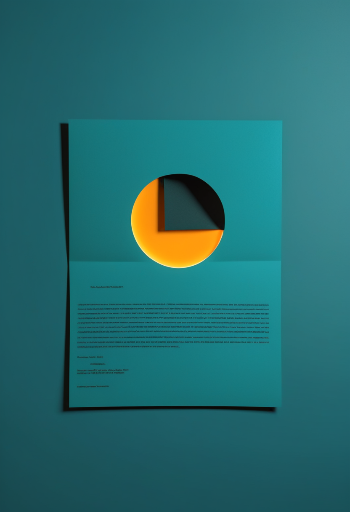
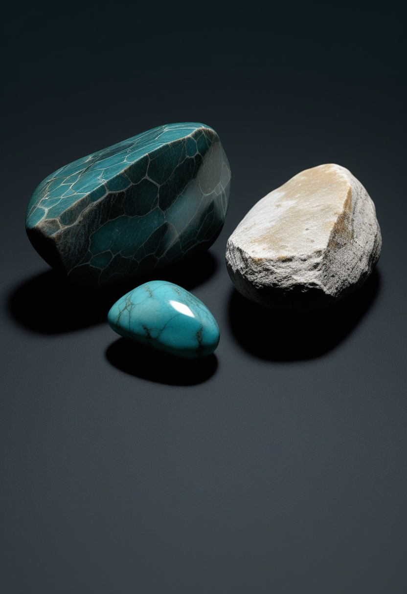

米国はPAHOの書簡で麻疹排除国の地位を失う運びに、正式発表は11/17見込み。SMAの優先審査は会社発表で確定し、エボラには新ワクチン治験という一歩が加わった。
汎米保健機構(PAHO)は米国政府に書簡を送り、『米国はもはや麻疹排除国とみなされない』と伝えたと、ロイターが11/16に報じた(政権高官の話)。正式発表は現地時間11/17の見込み。決め手は2025年6月に始まったユタ州の流行で、同じ系統のウイルスが12か月以上続いて広がったと判断された。米国は2000年に排除を達成し、26年間その地位を保ってきた。2026年の確定例はHealioが11/9時点で伝えた数字で5,100例超・47州にのぼる。カナダは2025年11月にすでに同じ理由で地位を失っている。同じ審査会合ではメキシコも審査されたが、結果は本号の時点で報じられていない。
SMAの筋肉に働く追加治療薬アピテグロマブ(米国名ISEMBYLD)について、Scholar Rockは11/10の第3四半期決算発表で『日本でのJNDA(医薬品製造販売承認申請)を提出し、優先審査の対象として受理された』と公式に述べた。これまで報道段階では確認できなかった優先審査指定が、会社自身の発表で確定した。日本人患者の臨床データなしでの申請をPMDAが認めた形で、優先審査は通常の審査期間の目安を約9か月に短縮する。欧州では10/8に再申請済みで、CHMP(欧州医薬品委員会)の意見は2027年前半の見込み。
FDAが継続しているゾルゲンスマとその髄注製剤Itvismaの腫瘍調査について、ノバルティスは2019年の承認以降、腫瘍の報告が9件あったと説明している。このうち3件でがん関連遺伝子GLI1に関わる腫瘍が確認され、さらにそのうち2件で遺伝子治療ベクターがゲノムに組み込まれたことが確認された。Itvismaでは腫瘍の報告はまだない。FDAは11/16時点で新たな規制措置を発表していないが、承認された使い方では利益がリスクを上回るとの立場を維持し、腫瘍の経過観察を求めている。
日本の優先審査は『要確認』から『確認済み』へ進み、治療が届く範囲は少しずつ広がる。一方でFDAは腫瘍報告の内訳を遺伝子レベルまで特定し始めており、治療の普及と長期安全性の確認は、まだ同じ速さで進んでいない。
BCIを手がけるPrecision Neuroscienceは11/16、ALS(筋萎縮性側索硬化症)の当事者を支援する非営利団体Team Gleasonとの提携を発表した。ALSの人たちやその家族・介護者が、脳表面に置く低侵襲なデバイス『Layer 7』の開発に直接意見を出せる仕組みを作り、臨床医向けの共同教育も進める。Layer 7は2025年4月に米FDAの510(k)クリアランスを取得済みだが、用途は手術中などの最長30日の記録に限られている。Team GleasonのCEOブレア・ケイシー氏は『Precisionは私たちのコミュニティのためだけでなく、共に作っている』と述べた。
BCIの当事者参加は、Layer 7がまだ短期記録にとどまる段階から始まった。ALSは運動・発話の機能を失っても認知は保たれることが多く、開発の初期から当事者の実感を取り込む動きが広がっている。

汎米保健機構(PAHO)は米国政府に書簡を送り、『米国はもはや麻疹排除国とみなされない』と伝えたとロイターが11/16に報じた。正式発表は11/17の見込み。決め手は2025年6月開始のユタ州の流行で、同じ系統が12か月以上続いて広がったと判断された。2000年から26年間保ってきた地位で、2026年の確定例は5,100例超・47州(Healio、11/9時点)。カナダは2025年11月に同じ理由で地位を失っている。詳しくは本号の今日の一本を参照。
アルジャジーラは11/15、DRCのエボラ(ブンディブギョ株)流行について、11/14時点で確定11,376例・死者5,568人、8州68保健区域に広がっていると報じた(アフリカCDCの集計はやや少なく、集計元で差がある)。アフリカCDCのカセヤ事務局長は、拠出が約束された29億ドルのうち実際に出たのは13億ドルだけだと指摘した。WHOは新しいエボラワクチン2種の治験を承認し、結果は2027年前半の見込み。国連は、武装勢力ADFによる住民・医療従事者への攻撃が対応を妨げていると警告している。米CDCは、米国内に確定例はなく国内リスクは低いとしている。
DRCでは今年に入りコレラが6万例超・死者1,800人となり、WHOのテドロス事務局長は『数十年で最悪』と表現していた。DWは11/10、首都キンシャサ東部のキンガブワなど郊外で新たに3例を確認したと報じた。雨季に入り、エボラとの二重の流行への警戒が強まっている。
米国の麻疹排除喪失は書簡という具体的な手続きの段階に入り、正式発表を待つだけになった。エボラは新ワクチンの治験という前向きな一歩と、資金の半分以下しか届いていないという足どりの重さが同時に進む。コレラはついに首都の郊外へ実際に到達した。
NOIRLabのシルビア・オノラート氏らの研究チームが、最も遠く古いコンパクトなクエーサーの対『Nāpōwawāʻenakaulua』(J1602+4228AB)を報告した(The Astrophysical Journal Letters)。赤方偏移は約6.08で、ビッグバンから約9億年後の姿にあたる。宇宙の夜明け期に見つかったクエーサー対としては3例目。2つの巨大ブラックホールの間隔は約1万8,100光年と報じられているが、この数値は二次情報で要確認。
中国・安徽省合肥で11/8、複数の中性原子量子計算ユニットをつなぐ試作機『乾真(Qianzhen)』が公開された。量子コンピューターを大規模化する際の壁を越える道になりうるとされているが、量子ビット数などの性能や独立した検証はまだ公表されていない。
心血管病のない70歳以上で慢性疾患を2つ以上持つ約1,900人を対象に、予防目的のスタチンを中止する群と続ける群を比較したSTREAM試験の結果がNEJMに掲載された。2年時点の心筋梗塞・脳梗塞・死亡では中止群は継続群に劣らなかったが、4年時点では中止群の心血管イベントがやや増えた。生活の質や転倒のリスクに差はなく、研究者は年齢や全身状態を踏まえて患者と話し合って決めるよう勧めている。
宇宙の夜明けには最古のクエーサー対が見つかり、中国の量子は『つなぐ』方向で大規模化を目指す。高齢者のスタチン中止は、短期の安心と長期の注意が同じ結果の中に共存することを示した。
Anthropicが10/8に発表した利用規約の改定が11/12に施行された。Claudeに対する『持続的で不必要な虐待・残酷な行為』を禁じる内容で、主な対応は会話の終了。会社はClaudeの道徳的地位は『非常に不確か』だとし、苦しむ能力を認めたわけではなく予防的な措置だと説明している。通常の批判やテストはこの規約の対象外。
NYUでの講演(11/9)をもとにした論考が、AIに意識がない場合でも『福祉』を考える意味はあるのかを問うた。一方で、意識こそが道徳的に重要な福祉の必要条件だとする哲学論文もあり、議論は割れている。
エルサレム・ヘブライ大学のローラン・ダヴァン氏らが、イスラエル国内3遺跡で出土した粘土製の小像を分析し、学術誌PLOS ONEに発表した。像は鳥・哺乳類・人間を表し、約15,000年前から11,500年前のナトゥーフ文化のもの。赤やオレンジの着色が確認された像もあり、指紋の分析から子どもが制作に関わっていたことも分かった。従来は、粘土による造形が一般化したのは約11,500年前に農耕が始まってからと考えられていたが、今回の結果はその通説より大幅に早い時期から粘土での造形が行われていたことを示す。

テルアビブ大学のラン・バルカイ氏とエラ・アサフ氏らが、イスラエルのケセム洞窟で出土した小さく色鮮やかな小石や、サフニン渓谷で見つかった化石・珍しい地質模様を含むフリント製ハンドアックスを分析し、学術誌Evolutionary Anthropologyに発表した。レヴァディムやジャルジュリアなどの遺跡でも、再加工を重ねながら長く使われた道具が見つかっている。古く風化した外見にもかかわらず大切に保管された形跡があり、研究者らは、現代の記念品と同じように、ある場所や体験の記憶を呼び起こすために残された可能性があるとみる。世代を超えてこうした物を使い続けたことが、記憶や自己認識に関わる脳の仕組みへの進化的な圧力になったとも論じている。
AIの道徳的地位は企業の規約という実務に入り始めたが、意識の有無を巡る議論はまだ割れている。15,000年前の粘土像と50万年前の『特別な石』は、記録に残らない昔から、人が物に記憶や意味を込めてきたことを静かに語る。
今号の軸は『不確かだったものが、確かになった日』だった。米国の麻疹排除喪失は報道段階からPAHOの正式な書簡に進み、発表を待つだけになった。アピテグロマブの日本優先審査も、会社自身の発表で『要確認』から確定した。BCIではALS当事者の声が開発の初期段階に正式に組み込まれ、エボラには新ワクチン2種の治験という具体的な一歩が加わった。15,000年前の粘土像と50万年前の『特別な石』は、記録に残らない時代から、人が物事を大切に確かめ、留めてきたことを静かに語る。
おやすみなさい、また明日。